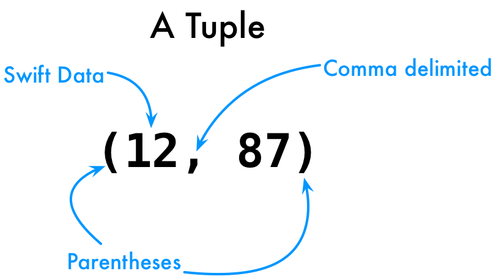
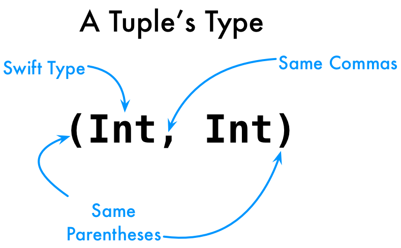

Have you ever found yourself wanting to return more than one thing from a function?
How is this done in most languages?
Both of those options are fairly heavy when we just want to return a few things, like a couple of numbers.
How would we even write a function that returns more than one thing? What would go after the return arrow for type? What would we actually return?
1 2 3 | func twoNumbers() -> ???? {
return ????
}
|
They are a lightweight way to pass multiple things around. Here's an example.
1 | let myTuple = (12, 87)
|

Tuples look a little like arrays. They have much lower overhead. We can use them whenever we want to pass around pieces without needing a class or array.
Our mystery function can now be updated like this.
1 2 3 | func twoNumbers() -> ???? {
return (12, 87)
}
|
OK, how about the return type for that function? Here's that constant with explicit types.
1 | let myTuple: (Int, Int) = (12, 87)
|

Now we can fill in the rest of the function.
1 2 3 | func twoNumbers() -> (Int, Int) {
return (12, 87)
}
|
Let's put that into this code block.